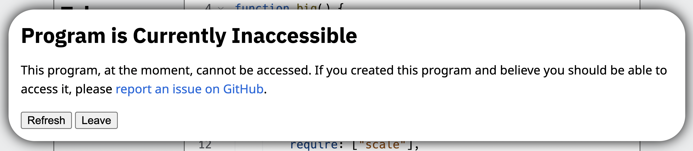
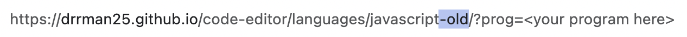
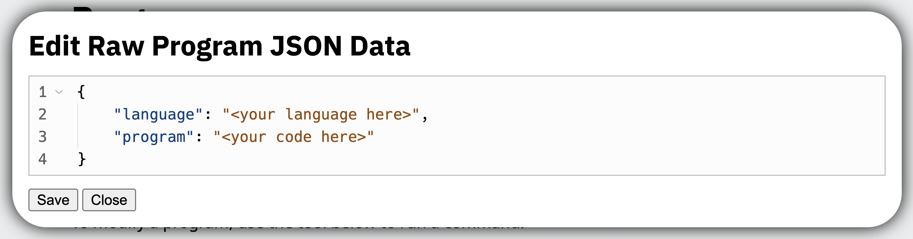
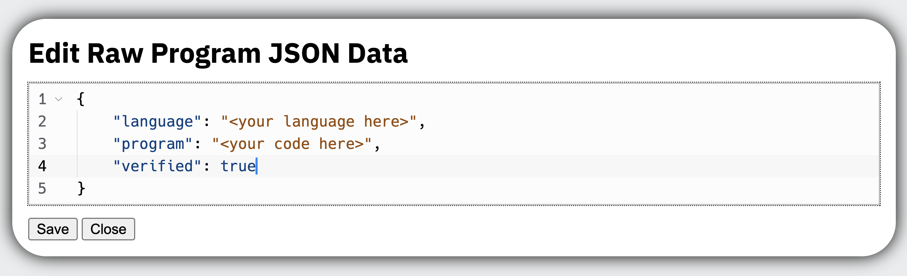

Fixing the "Program is Currently Inaccessible" Error
If you have a program that was made in a beta version of the DrRcraft Code Editor, and you try and open it now, you might see this infuriating message that you're not sure how to fix:
This can be incredibly frustrating, especially when you see this message when you open a project you've worked on for a long time. Hopefully, after reading this article, you can fix this error, and get right back to working on your masterpiece.
Temporary Fix: Use an Older Version of the Code Editor
Usually, the reason why this error occurs is because now, all programs need a verified property in their raw JSON data. However, older versions of the Code Editor do not require this verified property, and thus, can usually load and run the exact same programs.
Going back to an older version of the Code Editor is as simple as adding "-old" to the end of the language name in the URL. For example, replace:
https://drrman25.github.io/code-editor/languages/javascript/
with:
https://drrman25.github.io/code-editor/languages/javascript-old/

For most languages, this will work just fine, and you can access, run, save, and share your programs as normal. However, some newly-added languages, hence the name, do not have an older version for you to go back to. If this is the case, or if going to an older version every single time you open up a program is too tedious for you, move on to the next fix.
Permanent Fix: Edit the Raw JSON Data of the Program
This might seem like a very scary process because of the title, but it is actually pretty easy, thanks to the Code Editor's built-in raw JSON editor.
First, go to the Programs page, and find the "Run Commands" section. Once you've found it, click on the dropdown, and select EDIT. In the text box next to that, you want to type in the name of your program.
Once finished, click on the "Run command" button. You should see something like this:
If you see that, then create a new line anywhere between the two curly brackets, and in that new line, type:
"verified": true
Once you're done, your JSON should look like this:
Click "Save", and then "Close", and congratulations! You are finished, and when you refresh the page and click on the program, it should immediately open with no errors!